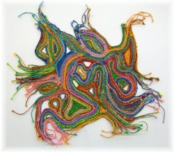

Truly a blend girl
When thinking about textile science, it is humbling to think that the first recorded instance of clothing manufacture was Adam and Eve taking leaves and covering themselves. If the Fall did not occur, would we spend so much of our lives toiling for the clothes we wear? Would we have made such an impact on the planet, and disrupted our mandate to care for the earth? And would we have had such extremes of temperature, and the need for clothing such as that taken to the ice and to Everest?
No, this is not really the stuff I ponder when developing my next clothing creation, but it is the stuff which fleetingly jumps across my mind as I carry out my work (often when hanging out the washing).
So what is textile science? In round terms, it is the study of the manufacture and properties of the fabrics we wear. Textile science, or, as we knew it at school, clothing.
For the last few centuries, the advances in clothing have been about improving the throughput of production, in particular the machines which allow us to process more fibre – quicker and higher quality.
But just around the corner lies a large, sleeping giant. This is the aspect of pollution – from the growing, processing and manufacturing of textiles. It has been estimated that cotton alone uses 10% of the world’s pesticides and 25% of the world’s insecticides.
We must be fair, however. A small crop infestation can wipe out the production of all fibres from each affected seed pod. It can also reduce their colour and quality (measured in fibre length). Perhaps the biggest issue, though, is the waste from the dyeing process. Dyeing is a water-intensive process in which the various chemicals are dissolved in water, and which the fibre (or finished cloth) is either bathed in or jetted through. Once this process is complete, the water becomes a waste product, with all the left-over chemicals still in solution. This issue alone has kept many a technologist busy over the last half-century.
It just wouldn’t be right to talk about the current state of textile science without discussing the merits of natural fibres versus the synthetics (in other words, cotton, wool, and linen versus nylon, polyester and elastane or lycra). This discussion can come from two points of view. Firstly, which is better for your skin: to allow it to breathe using natural fibres, or to wrap it in plastic? The second point is that of origin: natural fibres are by nature a sustainable resource – they don’t come from a limited resource like oil, as the synthetics do. (Yes, that’s right – thanks to the work done by Mr Du Pont and his friends, synthetics are just reconstituted oil.)
In this debate I sit on the fence. I quite like wearing my merino and cotton clothes, because they never have the body odour problems my polyester clothes have. However, nylon and elastane add some very useful properties because they are filament fibres (they go on “forever”) as opposed to staple fibres (which are cut to length from a sheep’s back). This greatly adds to the wear capabilities of your socks. These days, you’ll find that some of your sock just disappears, but the knit will be thinner – visible but not broken. What happens is the filament stays but the staple goes.
The other property you may find useful is elasticity (when fabrics bounce back after being stretched). Elastane can stretch to five times its original length, handy for those days of overeating. Things have got very clever in this department. These days we can wind cotton or wool around the elastane, and the result has the stretch of elastane but breathes like natural fibres. This all means I am truly a blend girl.
For those of you who don’t like wool because it’s prickly, your argument will only hold till you invest in quality. The finer the diameter of the fibre (measured in micrometres, m), the less chance of you feeling it. In fact, textile scientists have even figured out at exactly what diameter you start to feel individual fibres.
Moving forward, I guess the exciting part of all of this is the possibility of using bio fuels as the raw materials for synthetics, thus making them a renewable resource. And this takes us back to the very first synthetic produced – rayon. Rayon is otherwise known as “artificial silk”, and is made from wood pulp (how renewable can you get?).
Funny how we have come full circle.
Margaret Haverland is a mechanical engineer, seamstress, mother of five, and owner of a Christchurch sewing shop. She’s also got some sweet kayaking skills.